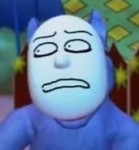

elli's web haven

status: tired, very very tired...
monthly video
about me
Welcome to my website! This website is an online collection of myself. This website is made by Elli, aka me. I am a game developer, writer, and an artist. This is a complete rewrite of my old Neocities site from scratch. I started that website in June of 2023. The reason for the complete rewrite is firstly, that many pages contained outdated information. The outdated information was littered everywhere so it would be hard to fix every tiny little thing. Secondly, I didn't like the layout of my website at all.
likes
- video games & game dev
- music
- art
- writing
- my family & friends
- sprituality
- italian and cuban food
dislikes
- capitalism
- being interrupted
- mean people
- extremely tangy food
- eye contact